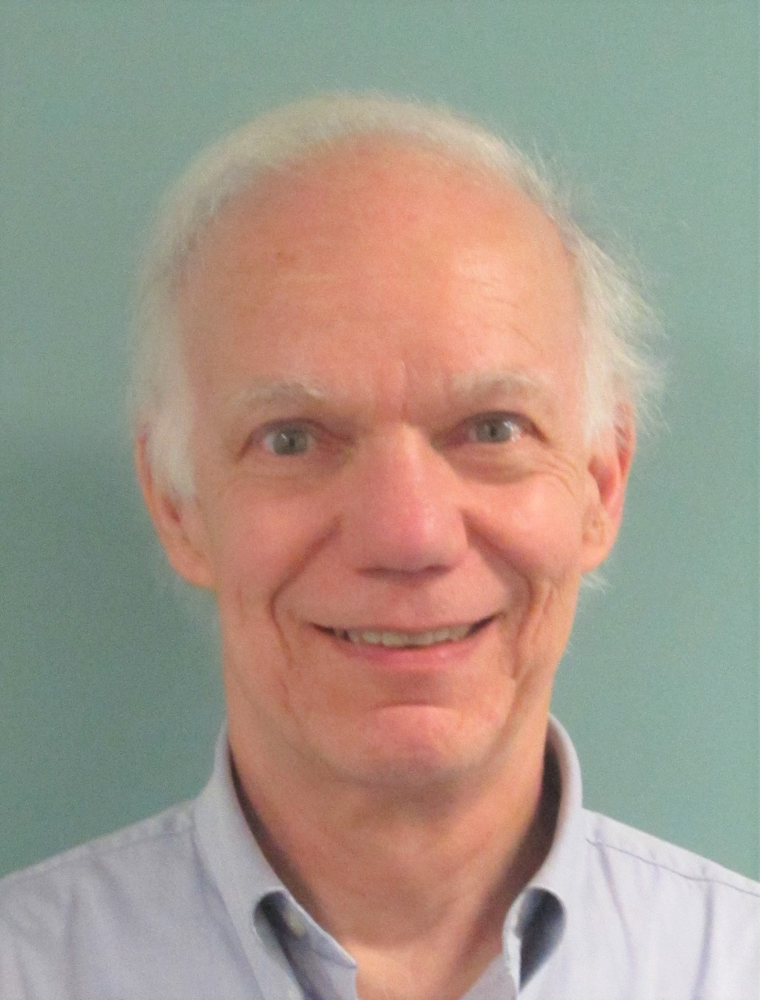

Lab Director & Post-doctoral Researchers

Patrick E. Shrout, Ph.D.
Professor Patrick Shrout leads the NYU Couples Lab. Pat received his Ph.D. in psychology from the University of Chicago under the direction of Donald W. Fiske. He spent fifteen years on the biostatistics faculty at Columbia University doing work on screening for mental disorders, diagnostic reliability, and psychiatric epidemiology. After moving to NYU psychology he began to work on dyadic support and coping processes in longitudinal studies. His methodological interests and focus on psychological process allow him to support students with a variety of interests in social psychology. Please see his Department Webpage for more information.

Anne K. Reitz, Ph.D.
Anne is a post-doctoral fellow at NYU and Columbia University. She completed her Ph.D. in Psychology in 2013 at Humboldt University Berlin as a fellow of the International Max Planck Research School LIFE. Anne studies the contexts and mechanisms of personality development by integrating social, personality, and lifespan approaches and applying longitudinal research methods. She is particularly interested in the dynamic processes between the individual and the environment, including social relations, life transitions, and sociocultural contexts. Currently, Anne is running a project on self-esteem development during the transition to work using intensive longitudinal data.
Marika Yip-Bannicq
Marika is a 5th year doctoral student in NYU’s Social Psychology program. She received her BA in liberal arts from Sarah Lawrence College 2011. Her research explores how the level of abstraction one uses to mentally represent close relationships (i.e. relationship construal level) affects relationship regulation processes and outcomes (e.g. conflict, support, satisfaction), and how can self-control in the context of close relationships be conceptualized as a dyadic, interpersonal process.

Crystal A. Clarke
Crystal is a fifth year doctoral student in NYU’s Social Psychology program. She graduated from Amherst College in 2011 with a Bachelor's in Psychology. Her research interests include studying stigmatized identities and how prejudice orchestrates intergroup relations. Her current line of research explores to what extent the police are perceived as a source of threat vs safety and considers ethnic identity differences among African American and Black Immigrant youth.
Yasmin Ghodse-Elahi
Yasmin is currently a 1st year doctoral student at NYU’s Social Psychology program, working primarily with Dr. Pat Shrout. She received her B.Sc. in Psychology with a minor in Buddhism and Mental Health from the University of Toronto in 2015. Yasmin is generally interested in bridging the gap between sex research and research on romantic relationships. Specifically, she is investigating how orienting to high-level and low-level features of a relationship can differentially impact sexual outcomes.
Qi Xu
Qi is currently a 3rd year doctoral student at NYU’s Social Psychology program. Qi was born and raised in China. After receiving her B.S. in Applied psychology from Shanghai Normal University in 2012, she began her master's at NYU in the fall of 2012. After receiving her M.A. in General Psychology in 2014, she joined NYU's doctoral program fall of that year. Qi is broadly interested in how people represent their romantic relationship and how relationship representations influence thoughts, feelings and behavior.
Matthew T. Riccio
Matt is primarily interested in the social cognitive and perceptual processes that predict and promote effective health relevant self-regulation, self-control and goal pursuit. His research investigates the ways that motivational states and social support processes can influence dietary behavior, physical activity, mental and physical health, and overall wellbeing. Matt works primarily with Professors Emily Balcetis, Pat Shrout, and Yaacov Trope.

Rugile Tuskeviciute
Rugile graduated with a BA in Psychology from UC Berkeley in 2010. She is a 5th year doctoral student. Her research interests include self-regulation and self-control processes in close relationships as well as coping dynamics in couples.
Master Research Assistants

Isabelle Sheck
Izzy recently graduated with a B.S. in Human Development from Cornell University. Her research interests include social identity and personality development, attachment theory, and the concept of co-regulation in human bonding. In the College of Human Ecology, she worked as a lab manager and research assistant in the Adult Attachment Lab and Sex and Gender Lab. Currently, she is working as a research assistant at NYU's Social Psychology Department in the Social Perception Action and Motivation Lab and The Couples Lab. She hopes to earn her PhD and pursue a career in research.

Nicola Frances Katzman
Nicola is a second year psychology master’s student at New York University. She graduated from Cornell University in 2015 with a Bachelor of Science in Human Development. Nicola’s interests include the self and social identity within close relationships. She is currently examining the self-regulation of momentary need for uniqueness and self-perceived distinctiveness. In fall 2017, Nicola will begin doctoral training in the Social-Personality Psychology PhD program at University at Buffalo.
Lauren M. Acri
Lauren is a first year psychology master’s student at New York University. She received her B.A. in Psychology from Monmouth University. Previously, she worked in the Gender Development Lab as well as the Relationship Science Lab at Monmouth University. Her current research interests include the relational self and how our self-concept influences our role in close relationships. Upon completing her master’s degree, Lauren plans on working towards her PhD and eventually obtaining a career in academia.
Undergraduate Research Assistants
Rachel Shamosh
Rachel is a Senior Undergraduate at NYU expected to complete her B.A. in Psychology with Honors in May of 2017. She is passionate about the study of dyadic relationships with a specific interest in language- and culture-bound social cognition. Rachel is also a reliable observational coder in the Second Iteration of the Rapid Intermarital Coding System (RMICS2), the most widely-used system in current use to code dyadic interactions. She continues to delve deeper into these interests as she pursues her departmental Honors Thesis at the Couples Lab on Construal Level Theory and Relationship Conflict focusing on partners’ pronoun usage during problem discussions.

Sukhveen K. Soni
Sukhveen is an undergraduate senior majoring in psychology and pre-medicine and minoring in chemistry and child adolescent mental health studies. She is working as a research assistant with Marika Yip-Bannicq to examine the interplay of construal level (how abstractly one thinks) and shared reality (experiencing a commonality of inner thoughts and feelings about the world) in support and conflict mediation processes. Her project currently focuses on how construal level and shared reality differs between chosen and unchosen (arranged) romantic relationships. She hopes to become a pediatric psychiatrist in the near future.